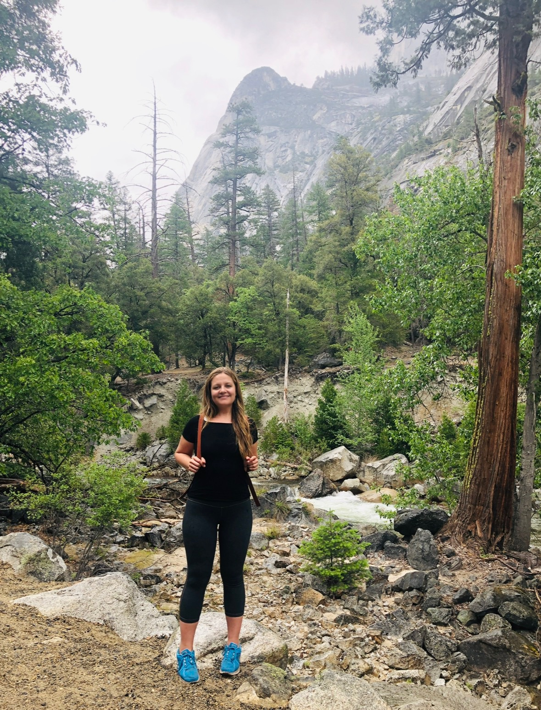
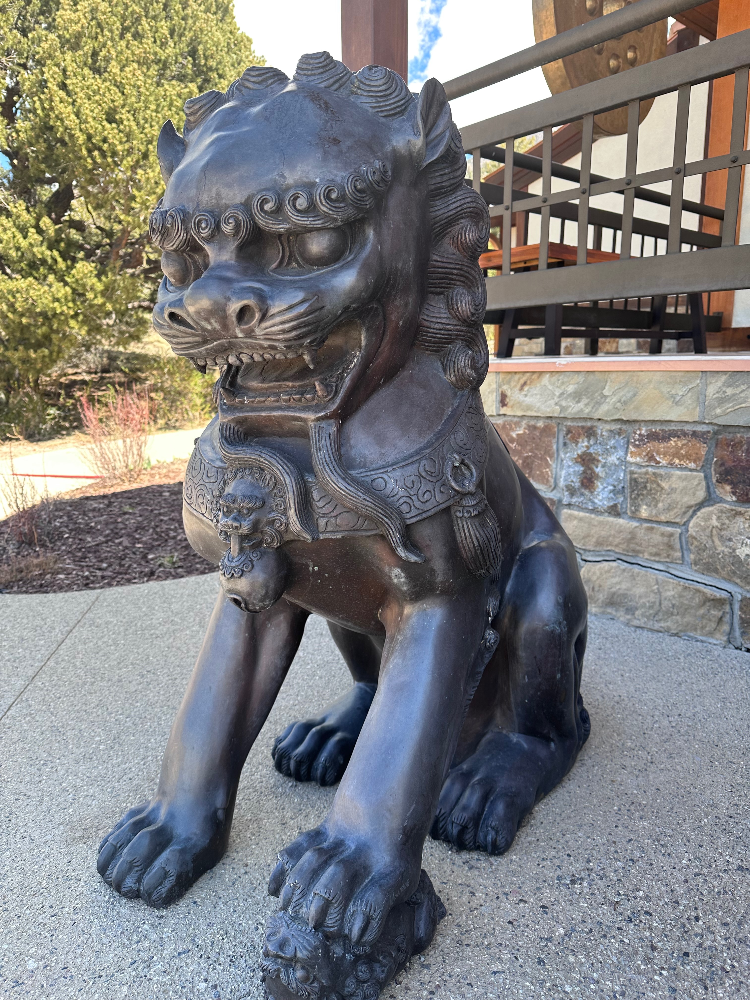
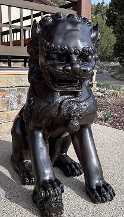
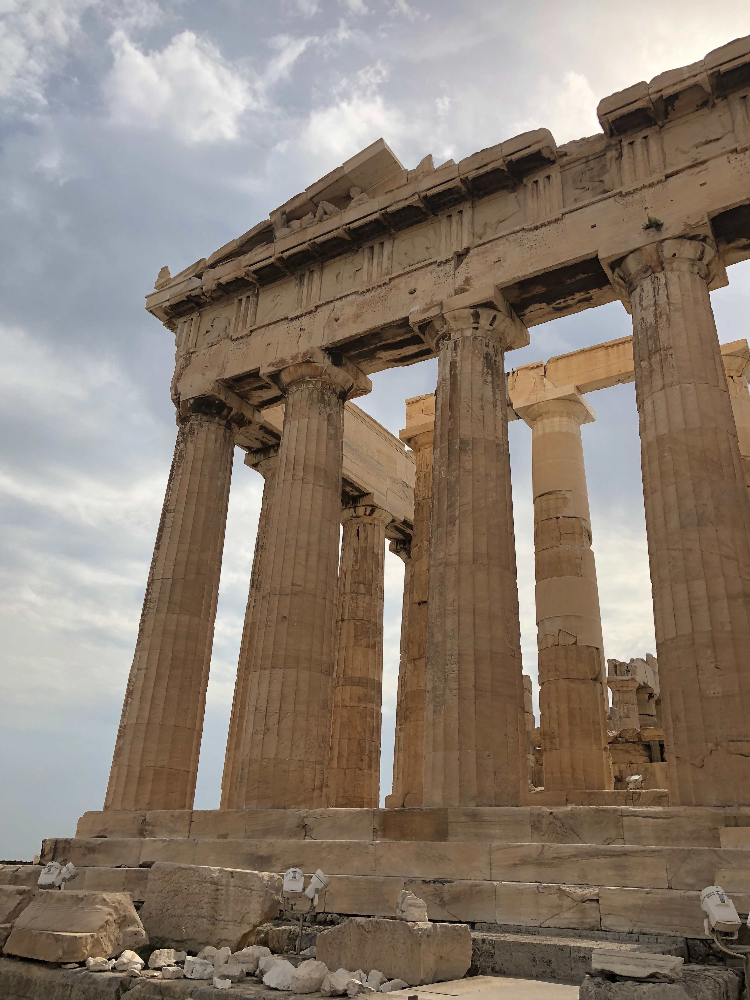

About
Background in psychology, user research, and team leadership. I take projects from discovery through delivery and use AI throughout to get to better decisions faster. Currently open to full-time, contract, and consulting roles.

Background
People make decisions in ways that do not always match what they say they want. Understanding that gap is what psychology teaches you, and it is exactly what user research is built on. I came to UX from that direction, which means I was already thinking about behavior, motivation, and the distance between intent and action before I learned what a wireframe was.
Since then I have worked across healthcare, health tech, subscription e-commerce, and nonprofits. Different industries, different problems, the same core approach: understand the people first, then decide what to build.
Leadership came with the work. Managing stakeholders, keeping cross-functional teams aligned, and translating between product, engineering, and business goals changed how I design. I stopped thinking about design as something that gets handed off and started thinking about it as something that has to hold up all the way through implementation.
How I Work
I start every project with research. Designing without it means working toward the wrong problem, and I have seen that happen. User interviews, competitive audits, card sorting, usability testing: the method depends on what the project needs.
I integrate AI into my workflow to support better research, ideation, and design decisions. Claude helped me run an 8-site competitive audit for Polly Banerjee in a fraction of the time it would have taken manually. ChatGPT helped me pressure test data logic during the Ourself Health metric audit. I am exploring how these tools can continue to enhance human-centered design, which is something I care about.
I am most useful to teams that need someone who can hold the full picture, from the first research question to the final handoff, and keep the work coherent across all the people it touches.
Outside of Work


I picked up this craft after a shipment of ancient statues arrived water damaged. What started as a practical problem became a quiet passion.

Deep history, delicious food, and being somewhere long enough to actually feel the culture. I'd rather go slow and go deep than cover a lot of ground quickly.
It slows me down and changes how I see the world around me.
Get in touch.